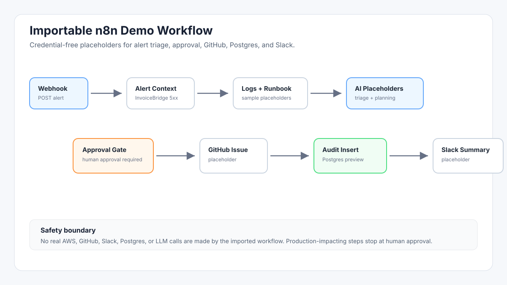
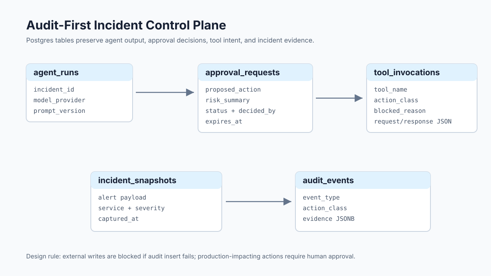

Alert fires
The signal is noisy, severity is uncertain, and customer impact is still unclear.
For on-call SRE and platform teams
InfraOps Agent Hub turns cloud alerts, logs, release context, and runbooks into a first-response packet: what fired, what changed, what runbook applies, and what needs human approval.
Clear promise: this is triage and handoff first. Production-impacting actions stay blocked until a human approves them.

The incident handoff problem
When an alert fires, the on-call engineer has to jump between metrics, logs, deploy history, runbooks, Slack, and tickets while people are asking for answers. The facts are scattered, the timeline is fragile, and the safest next step gets mixed with risky guesses.
The signal is noisy, severity is uncertain, and customer impact is still unclear.
One person checks logs, another checks releases, and runbook guidance sits in a different place.
Rollback, restart, scale, and config-change ideas appear before evidence and approval are captured.
The audit trail gets reconstructed later from Slack threads, terminal history, and memory.
What changes
InfraOps Agent Hub gives the on-call engineer a structured path from noisy alert to safe handoff. It gathers approved context, separates evidence from recommendations, blocks risky actions until approval, and keeps an audit trail while the incident is fresh.
Operational outcomes
Keep alert facts, sampled logs, release correlation, and runbook matches together so responders argue less about what happened.
Classify actions as read-only, approval-required, or blocked before anyone treats a recommendation like a command.
Ground next steps in approved runbooks and make unsupported actions visible before they become production changes.
Give the next engineer a short, evidence-backed incident summary instead of a long Slack thread.
Write incident evidence, recommended actions, and approval state into Postgres while the incident is still fresh.
Evaluation workflow
The evaluation build includes a runnable local demo and an importable n8n workflow. Real cloud, Slack, GitHub, and LLM calls stay disabled until least-privilege adapters and approval checks are in place.
The demo starts from an InvoiceBridge 5xx alert and reads structured sample logs plus the high-5xx runbook.
Evaluation-mode outputs summarize triage, release correlation, runbook lookup, next-step planning, and documentation.
Production-impacting steps remain approval-required. The local demo inserts one audit event into Postgres.
Concrete starting points
Correlate error logs with release timing, select the high-5xx runbook, and prepare an approval request before rollback.
Summarize CPU pressure, request trends, and safe read-only diagnostics before scaling or restarting workloads.
Capture projected exhaustion, growth signals, and blocked actions before any retention or cleanup change is considered.
Turn workflow failure context into a follow-up issue without giving automation broad repository write access.
Why this exists
Generic chat does not know your approved runbooks, does not enforce approval gates, and does not write an incident audit record by default.
Spreadsheets can track incidents after the fact, but they do not guide the first responder through evidence, risk, and approval during the incident.
n8n is the workflow engine here. InfraOps Agent Hub adds incident prompts, runbook structure, approval policy, sample data, and audit schema.
Manual response works until the incident is noisy, the Slack thread grows, and the audit trail depends on someone writing it up later.
Truthful trust signals

Private evaluation
Request a walkthrough with your alert sources, runbooks, and approval constraints in mind. There is no public billing or self-serve signup yet.
This opens a prefilled GitHub issue for now. No payment is collected. Do not include secrets, tokens, or private incident data.
FAQ
On-call SRE, platform, DevOps, and infrastructure teams that handle cloud incidents and need a safer AI-assisted triage loop.
It is built around incident evidence, runbooks, approval gates, and audit records instead of open-ended chat.
The evaluation build runs locally with Docker Compose. The included n8n workflow imports without credentials.
The demo uses local sample data only. The production path calls for server-side secrets, redaction, least privilege, and audit writes before external side effects.
The current flow opens a GitHub issue for a walkthrough request. A private intake form and in-app signup are not implemented yet.
It can reduce ad hoc triage docs, scattered Slack handoffs, and manual audit reconstruction. It does not replace monitoring or incident command.
It does not call real cloud APIs, send Slack messages, create GitHub issues, run LLM inference, or execute production remediation.
Yes for evaluation. The deployment guide recommends one small VPS or Lightsail instance before using RDS, ALB, ECS/Fargate, or OpenSearch.